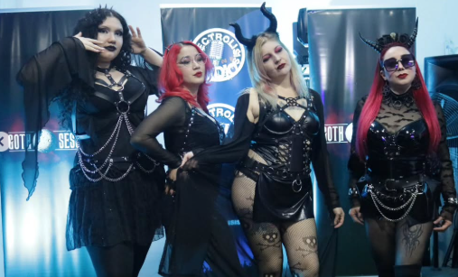

Fecha evento: 03/septiembre/2025
La Feria Addams, organizada por Goth Session SMedia, fue toda una experiencia.
Durante el evento, los asistentes pudieron explorar y adquirir prendas exclusivas de diferentes marcas,
disfrutando de un ambiente lleno de estilo, creatividad y originalidad.
Fue una oportunidad única para
conocer las tendencias más innovadoras y sumergirse en la moda alternativa.